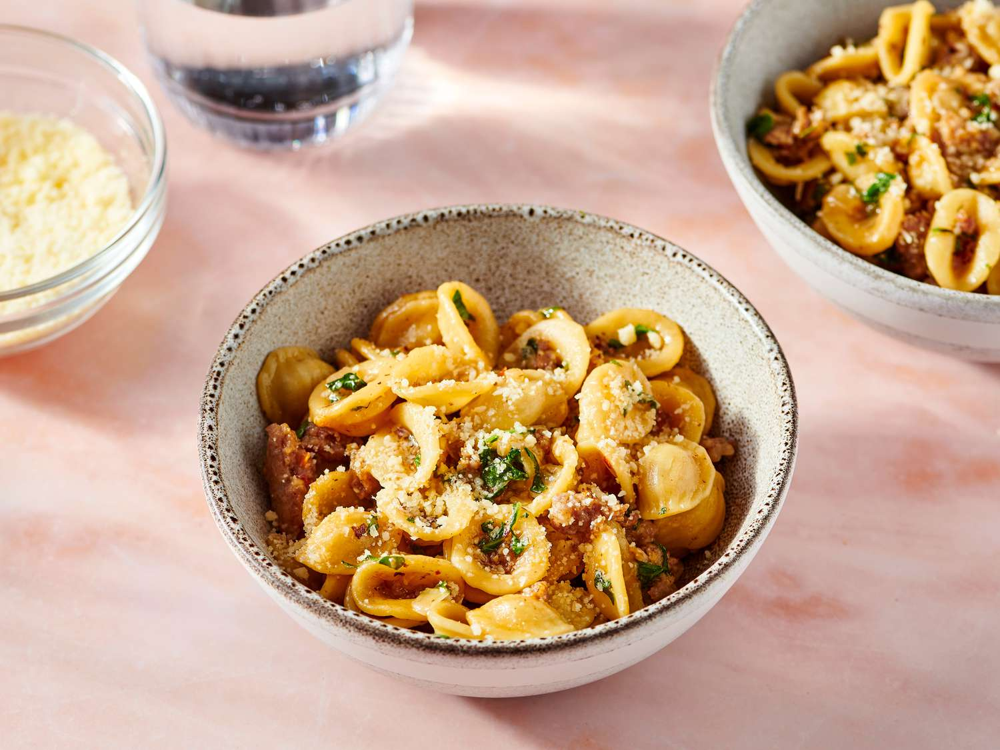

oreccHITTE!!!

This amazing dish can be made in just one single pan!
A cheap, easy, and wonderfully flavourful dish that won't take up your whole evening.
Ingredients
- 2 table spoons of Olive Oil
- 1/2 of a diced onion
- salt that suits your liking
- vegan or meat sausages (make sure the skin/casing is removed)
- 1/2 cup of chopped greens of your choice (arugula, micro-greens.etc)
- 1/4 cup of grated parmigiano cheese (or more, we know you love parm)
- 1 1/2 cups of chicken broth
Directions
- Heat oil in a deep skillet/pan/pot on medium heat.
- Add onion and salt, cook and stir until it has become clear. (approx 5 mins)
- Add sausage and cook for about 5 to 7 minutes, or until browned.
- Pour 1 1/2 cups of chicken broth into the mix and boil.
Scrape the residue of the food from the bottom to reintroduce.
- Add your orecchiette pasta, cook in and stir in the hot broth.
- Add remaining broth when the liquid is absorbed into the cooked pasta. Most will absorb. (approx 15 mins)
- Stir your chosen greens into the mix, until it wilts.
- Add to a bowl, and sprinkle your parmigiano cheese on top!
Return to Homepage